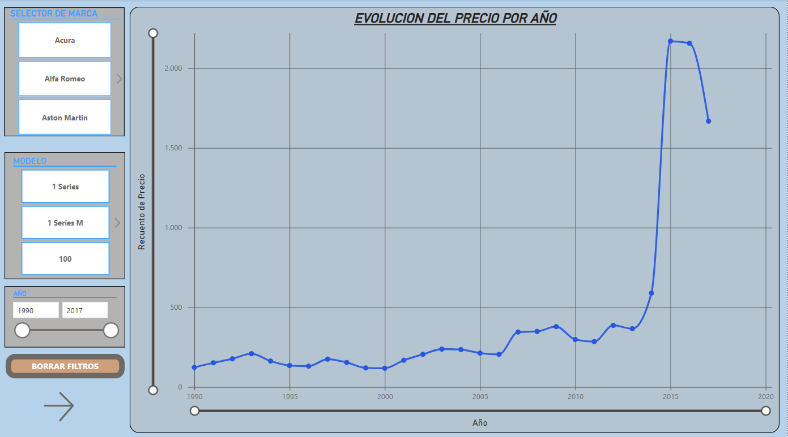
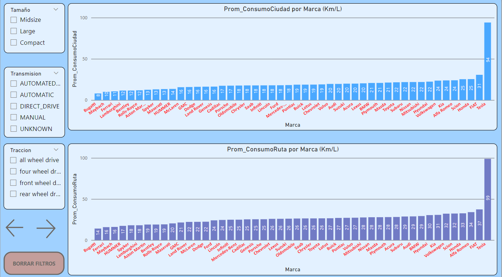
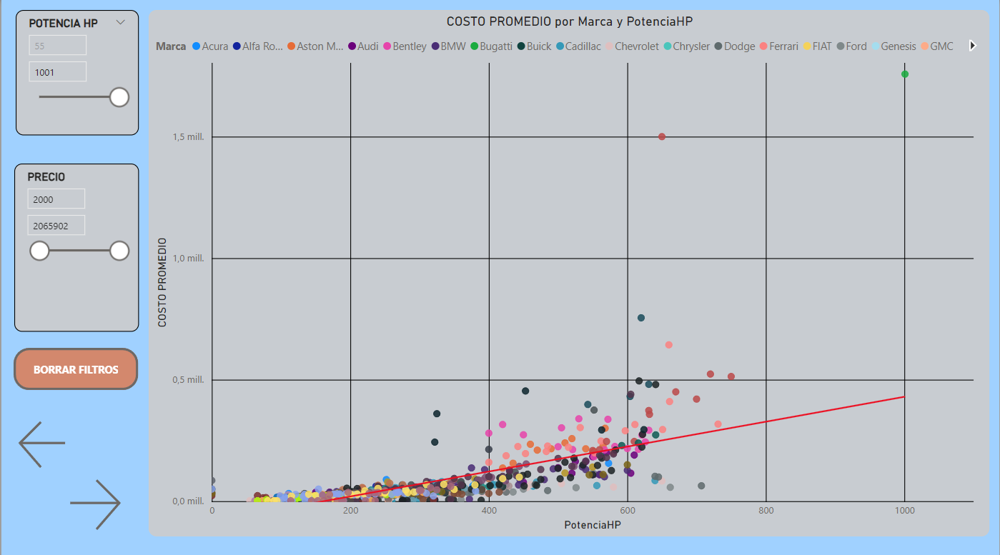
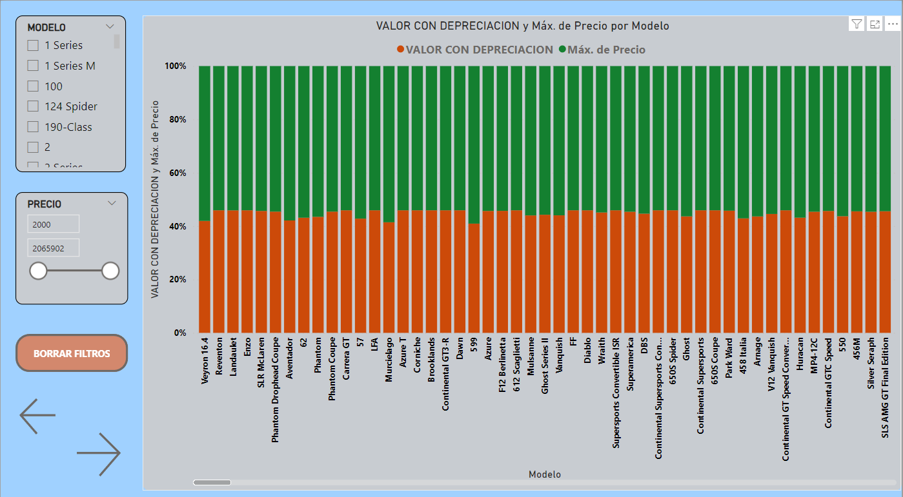

ANALISIS DEL MERCADO AUTOMOTRIZ
Este estudio contempla una dataset extraido de la plataforma KAGGLE, con el fin de aplicar los conocimientos
obtenidos en el curso.
A continuación se desarrolla de manera sintáctita cada gráfico con su respectiva explicación
EVOLUCION DEL PRECIO EN RELACION AL TIEMPO
 En este gráfico se puede apreciar, como es el comportamiento del costo vehicular, con el pasar del tiempo en el MERCADO
de manera global, claramente presenta un incremento con el pasar de los años debido a diversos factores económicos
no estudiados en este proceso. Este gráfico ademas cuenta con una serie de filtros o Segmentadores, que permiten ajustar
la visualizacion según la MARCA, MODELO o AÑO DE FABRICACION.
CONSUMO PROMEDIO en CIUDAD y RUTA
 En este gráfico compuesto por 2 gráficos de barras, en los cuales se detallan el rendimiento del vehiculo tanto en
CIUDAD y RUTA.
El gráfico superior muestra el RENDIMIENTO PROMEDIO (por FABRICANTE) en kilometros por litro en CIUDAD.
El gráfico inferior muestra el RENDIMIENTO PROMEDIO (por FABRICANTE) en kilometros por litro en RUTA.
Estos gráficos tambien cuentan son segmentadores, que permiten filtrar la visualización segun el interes el usuario.
RELACION PRECIO - POTENCIA HP
 En este grafico puntos, se muestra como es el comportamiento en cuanto a la relación PRECIO - POTENCIA, para las distintas
marcas para la POTENCIA que puede suministrar una marca en particular. Claramente el comportamiento presenta una tendencia lineal
a estas dos variables, pues el costo se incrementa en cuanto mas potencia puede prestar un determinado vehiculo. Cuenta con segmentadores
que permiten una busqueda mas precisa.
TASA DE DEPRECIACIÓN
 En este grafico puntos de barras apiladas, que representa el costo en tiempo de fabricación (100% de valor, barra naranja mas barra
barra verde), en la cual la barras naranjas representa el costo (en porcentaje) según la edad del vehiculo. Este grafico tamién cuenta
con segmentadores que permiten modificar la visualización, de acuerdo a la necesidad del cliente.